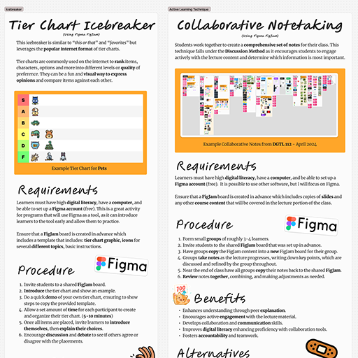
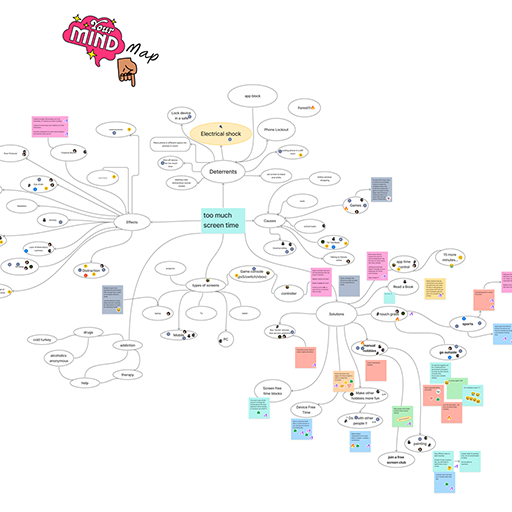

Instruction & Delivery

The Instruction and Delivery competency focuses on supporting learner success and facilitating learner employment readiness while creating a safe, engaging and inclusive learning community. In addition, it addresses the delivery of content and curriculum, selecting instructional materials and strategies in order to engage learners, and communicating with clarity and purpose.

(Click to View)
LIFT-1000 Final Assignment
As part of LIFT-1000 Interactive Lecturing in April 2024, I analyzed a "Tier Chart" icebreaker and a "Collaborative Notetaking" active learning technique.
This assignment helped me put language to something I have valued for a long time: active learning. Students build understanding by creating, discussing, testing ideas, and reflecting on their decisions.
Analyzing the "Tier Chart" and "Collaborative Notetaking" strategies clarified how participation can be structured with intention. Rather than adding activity for its own sake, these approaches require learners to engage directly with content and with each other.
Overall, this artifact strengthened my understanding of how deliberate, well-designed participation suports learned engagement and prepares students for collaborative work environments.

(Click to View)
MULT 208 Collaborative Mind-Map
In my MULT-208 Emerging Interactive Technologies course in February 2026, I implemented a "Collaborative Mind-Map" activity with students that was very successful.
The activity had students explore the issue of "too much screen time", a problem identified by themselves. It served as the first stage of a larger assignment, which students would design their own emerging technology that solved a real world problem.
The class was structured around collective exploration, as we created a mind-map together in a FigJam boad. Students contributed causes, effects, deterrents, and potential solutions. We incorporated rounds of voting to identify which ideas resonated most strongly with the group. This helped surface common concerns and gave direction to our discussion.